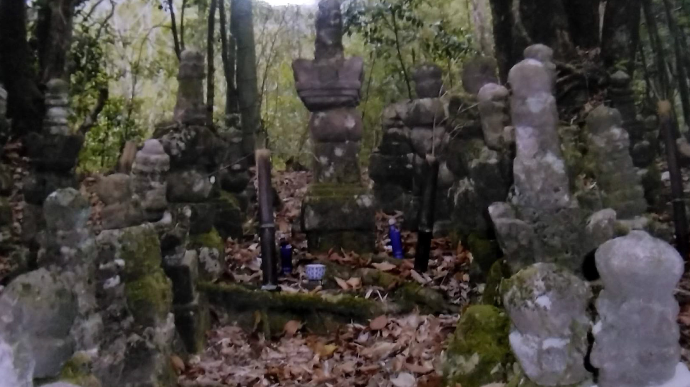
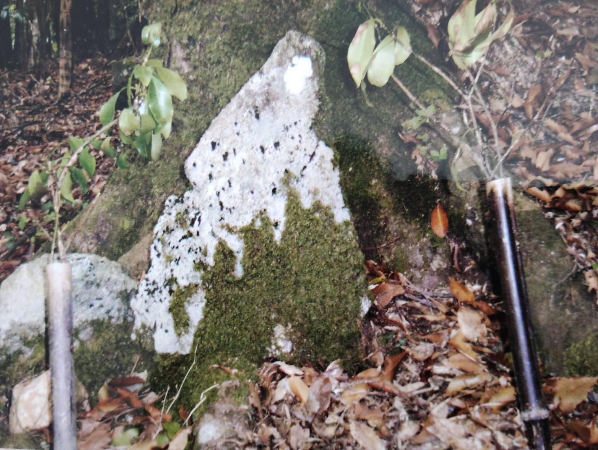
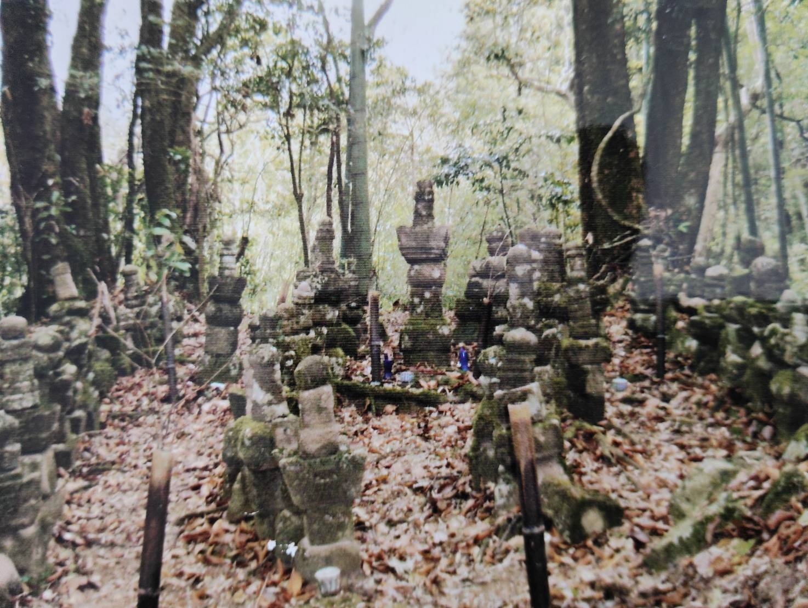
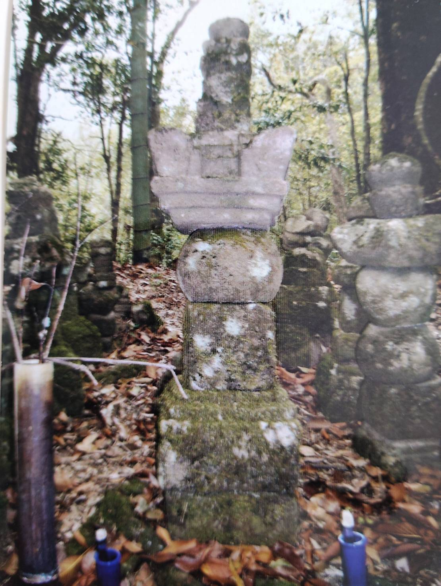
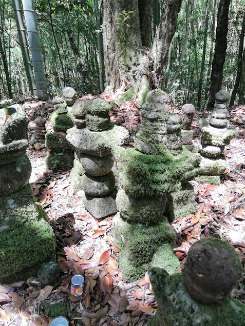
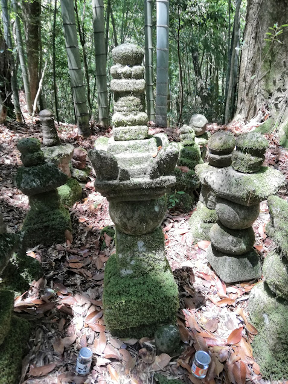
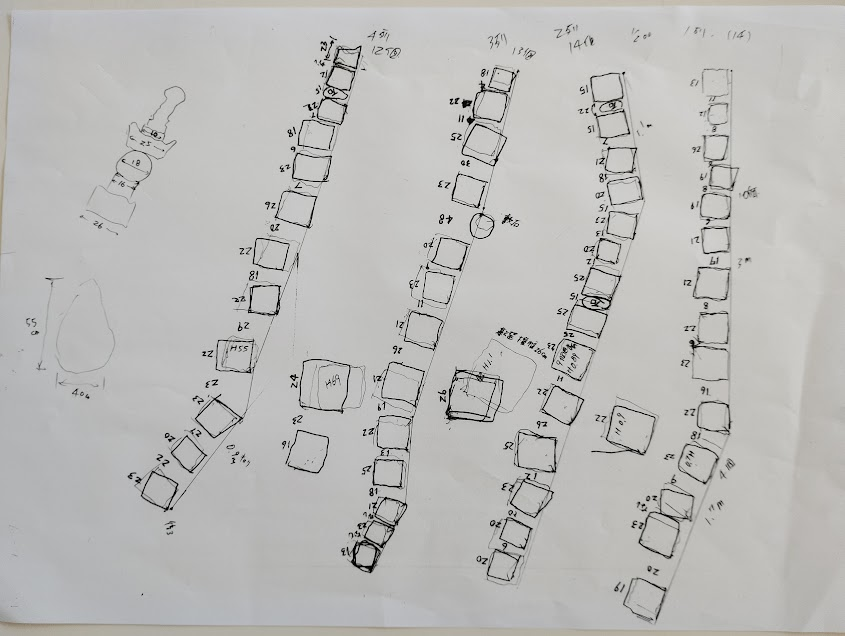
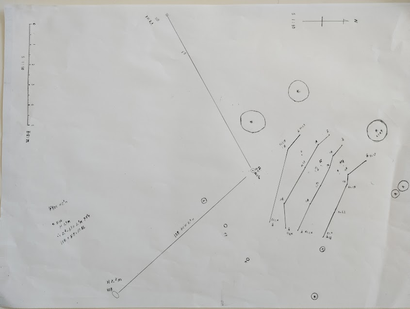

鳥巣にねむる「オオト様」とは
旧東松浦郡鳥巣の山中には、
地元で「オオト様」と呼ばれる石塔群が残されています。
人里を離れた竹林の奥に静かに佇むこの墓域は、
二基の宝篋印塔と多数の 五輪塔によって構成されています。
本ページは、約20年前に撮影した現地写真と、
その後に作成した配置図・石塔寸法の記録をもとに整理した調査資料です。
現在は竹林の繁茂などにより現地の状況を確認できておらず、
本ページは調査当時の記録として公開しています。
第一章では、現地で確認できた事実を整理し、
石塔群の配置・構造・規模について調査記録としてまとめます。
第二章では、その調査結果をもとに、「オオト様」とは誰を祀る墓域なのかについて考察します。
史跡： オオト様





第1章 現地調査記録
1-1 調査概要
現地へは竹林の中を進み、緩やかな山道を二〜三分ほど登ることで石塔群へ至る。
石塔群へ入る手前の左側には一つの石が置かれている。
（写真1）この石には竹製の花立てが設けられており、現在でも供養の対象として扱われていることが確認できた。
その石の横を進むと、左手に多数の石塔が静かに姿を現す。（写真2）墓域は周囲を竹林に囲まれているものの、 石塔群が配置された範囲には竹がほとんど生育しておらず、当時は人の手による管理が続けられていた様子がうかがえた。
一方で、墓域の左右では竹林が徐々に内側へ広がっており、 年月の経過とともに竹が墓域へ迫っている状況も確認できた。 現在は現地へ至る道も失われつつあり、その後も同様の管理が続いているかは 確認できていない。
1-2 石塔群の配置
本章末に掲載した配置図（図1・図2）をもとに確認すると、石塔群は無秩序に並べられているのではなく、一定のまとまりを持って配置されていることが分かる。
墓域の最奥部には二基の宝篋印塔が並んで建立され、その前面には多数の五輪塔が広がるように配置されている。
さらに宝篋印塔の背後にも左右それぞれ数基の石塔が確認でき、墓域全体を囲むような構成となっている。意図的に計画された配置である可能性が考えられる。
現在確認できる石塔数は五十数基であるが、配置図や現地の状況からは、過去にはさらに多くの石塔が存在していた可能性も否定できない。
1-3 宝篋印塔と石塔の特徴
（写真3※写真では、１基）墓域の最奥部には二基の宝篋印塔が並んで建立されている。
周囲には多数の五輪塔が配置され、さらに宝篋印塔の背後にも数基の石塔が確認できることから、
この二基を中心とした墓域構成となっていることが分かる。
（写真4）（写真5）各石塔の寸法を記録したところ、宝篋印塔は墓域の中心に据えられているものの、その規模は決して大きくはなく、五輪塔についても石塔ごとに大きさや形状に違いが確認できた。
一方で、石塔は全体として一定の方向を向いて配置されており、無秩序に集められたものではなく、意図を持って建立された墓域であることがうかがえる。
また、一部には後世に積み直されたと思われる石塔も見受けられた。 長い年月の中で倒壊した石塔を地域の人々が修復し、墓域を維持・保存してきた可能性が考えられる。
1-4 現地調査から確認できたこと
本調査では、写真記録、配置図、石塔寸法をもとに現地の状況を整理した。 その結果、石塔群は自然に集まったものではなく、墓域として一定の計画性をもって築かれた施設である可能性が高いことが確認できた。
一方で、建立年代や被葬者を示す資料は確認されておらず、石塔群の由来を断定することはできない。 しかし、墓域の構成や宝篋印塔を中心とした配置、そして今日まで地域の人々によって守り続けられてきた事実は、この場所が地域にとって特別な意味を持つ墓域であったことを示している。
次章では、これらの現地調査結果をもとに、「オオト様」とは誰を祀る墓域なのかについて、史料や地域に残る伝承を踏まえながら考察を進める。

配置図１

配置図２
第二章 「オオト様」とは誰を祀るのか
2-1 考察の前提
第一章では、現地調査によって確認できた事実のみを整理した。
本章では、その調査結果に加え、郷土史料や古文献を照らし合わせながら、
「オオト様」と呼ばれる石塔群が、誰を祀る墓域であるのかについて考察する。
なお、本章で述べる内容は、現存する史料および現地調査から導き出した 筆者個人の考察であり、被葬者を断定するものではない。 しかし、複数の史料と現地調査を照合していくと、 いくつかの共通点や歴史的背景が浮かび上がってくる。
中でも最初に注目したいのが、
「オオト様」が築かれた鳥巣という土地である。
鳥巣は単なる山間の集落ではなく、
戦国時代には波多氏とも深い関わりを持つ場所であった。
まずは、その歴史的背景から見ていきたい。
2-2 なぜ鳥巣だったのか
第一章では、「オオト様」が人里離れた鳥巣の山中に築かれていること、 そして周囲を深い竹林に囲まれた静かな墓域であることを確認した。 では、なぜこの場所に墓域が築かれたのだろうか。 その手掛かりは、鳥巣という土地の歴史にある。
郷土史に引用されている『九州治乱記』によれば、天正元年（1573）の草野攻めの際、 竜造寺隆信は波多三河守の家臣である 八並蔵守・福井山城守の案内により鳥巣へ入り、 この地に本陣を構えたと記されている。
これは鳥巣越えが誰もが通る街道ではなく、 地元の地形を熟知した者の案内が必要な険しい山道であったことを示している。 また、郷土史には寺屋敷にあった寺がこの戦いで焼かれたと伝えられている。
このように鳥巣は、人目につきにくい山間の地でありながら、 波多氏の家臣が地理を熟知していた重要な場所でもあった。 この地理的条件は、「オオト様」がこの場所に築かれた理由を考える上で、 見逃すことのできない要素である。
2-3 文献に見る「オオト様」
「オオト様」は、古くから地域の人々によって守り継がれてきた墓域であり、 郷土史には川添氏が祭祀を行っていることが記されている。
また、九州大学の民俗研究では、鳥巣地区に 「岸岳末孫（キシダケパッソン）」として祀られている一石五輪塔が紹介され、 鳥巣に岸岳落城後の伝承が残されていることが報告されている。
一方、本調査で確認した「オオト様」は、 二基の宝篋印塔を中心に数十基の独立した五輪塔が配置された石塔群であり、 論文で紹介されている一石五輪塔とは構造が異なっている。
このことから、両者を同一の遺構と断定することはできない。 しかし、鳥巣という地域に岸岳末孫を祀る信仰が存在していたことは、 「オオト様」の性格を考える上で重要な資料となる。
現時点では、「オオト様」の被葬者を直接示す史料は確認されていない。 そこで次項では、現地調査で確認した石塔群の配置や規模、 さらに歴史的背景を照らし合わせながら、その可能性について考察していく。
2-4 現地調査から見えてくるもの
第一章で確認したように、「オオト様」は二基の宝篋印塔を墓域最奥部に据え、 その周囲を数十基に及ぶ五輪塔が取り囲むように配置されている。
このような構成は、自然に石塔が集まったものとは考えにくく、 一定の意図をもって築かれた墓域であることをうかがわせる。
また、現地で計測した宝篋印塔は決して大型ではなく、 豪壮な供養塔というよりも、人目を避けるように山中へ築かれた印象を受ける。
墓域は深い竹林に囲まれ、外部から容易に確認できる場所ではない。
第一章でも述べたように、現在でも供養が続けられており、
長い年月を経ても地域の人々によって大切に守られてきたことが分かる。
一方で、このような墓域を築くためには、 数十基に及ぶ石塔を建立できるだけの人員や経済的基盤が必要であったと考えられる。 当時の鳥巣は小さな山村であり、村単独でこれほどの墓域を築いたとは考えにくい。
こうした現地調査の結果と、これまで紹介してきた史料を重ね合わせると、 「オオト様」は地域の有力者、あるいは特別な人物を祀る墓域として築かれた可能性が考えられる。
2-5 波多三河守親の墓ではないか ― 一つの考察 ―
ここまで見てきたように、「オオト様」は単なる共同墓地とは考えにくい特徴を持っている。
山中の奥深くに築かれた立地、二基の宝篋印塔を中心とした墓域構成、
そして数十基に及ぶ五輪塔群は、特別な人物を祀るために築かれた墓域である可能性を感じさせる。
また、『九州治乱記』には、鳥巣が波多氏の家臣によって案内された土地であったことが記され、
九州大学の研究では、鳥巣に「岸岳末孫」を祀る信仰が存在していたことが紹介されている。
これらの史料は、「オオト様」と直接結び付くものではないが、
鳥巣という土地が岸岳落城後も
波多氏と深い関わりを持ち続けたことを示す重要な資料である。
さらに、波多三河守親の妻・秀の前については、 後に鍋島家によって佐賀へ迎えられ、保護されたことが知られている。 一方、親のその後については筑波で没したとする記録が残されているものの、 その最期についてはなお明らかではない。
もし親が落城後も生存し、人目を避けて落ち延びていたとすれば、
波多氏ゆかりの人々が知る鳥巣のような山間の地は、
身を隠す場所として適していた可能性も考えられる。
また、仮に鳥巣までたどり着くことができなかったとしても、
忠臣らがその亡骸をこの地へ運び、密かに葬った可能性も完全には否定できない。
もちろん、これらを裏付ける直接的な史料は現在確認されておらず、 「オオト様」が波多三河守親の墓であると断定することはできない。 しかし、現地調査によって確認した墓域の規模や配置、 鳥巣という土地の歴史的背景、 そして現在まで受け継がれてきた地域の信仰を重ね合わせると、 この地に眠る人物が波多三河守親であった可能性を、 筆者は静かに感じている。
本稿で述べた内容は、現存する史料と現地調査から導き出した一つの考察に過ぎない。 「オオト様」の正体を明らかにするためには、今後、行政や大学などによる考古学的調査や、新たな史料の発見が望まれる。 本稿が、その新たな研究への一助となれば幸いです。
参考文献・主典
・『九州治乱記』
・『浜玉町史』 第17章「鳥巣」
・田中丸勝彦
『落人伝承と崇り神―唐津周辺のキシダケパッソン―』
（九州大学学術情報リポジトリ）
・佐賀県地域交流部文化・観光局
「SAGA OTakara」高伝寺（秀の前）